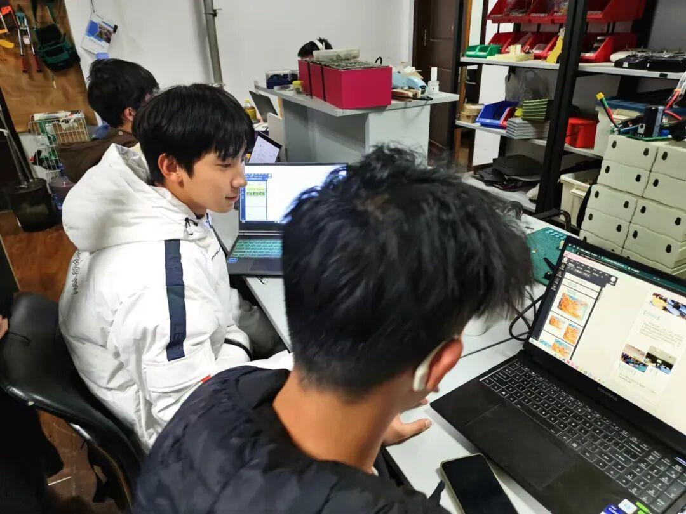
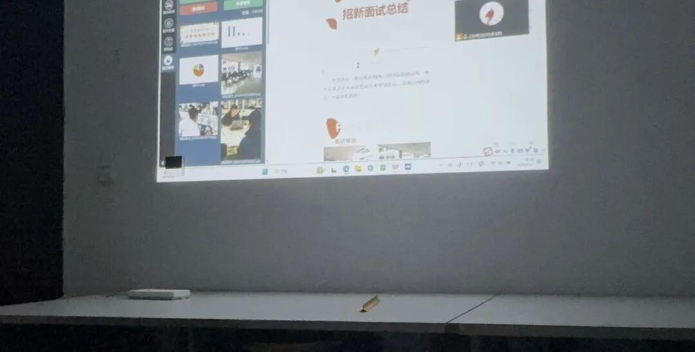
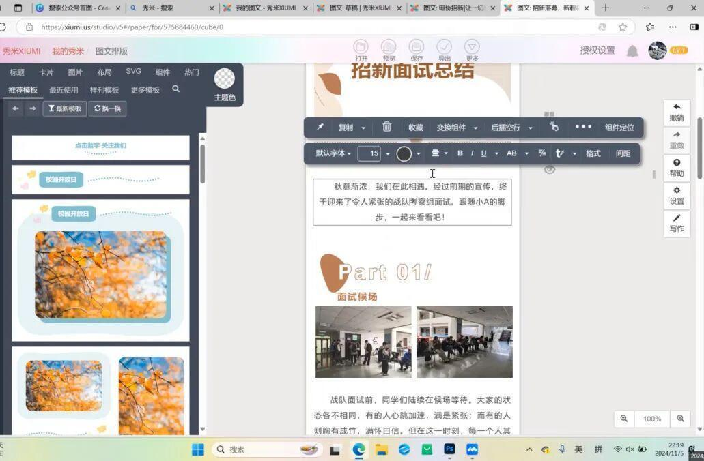
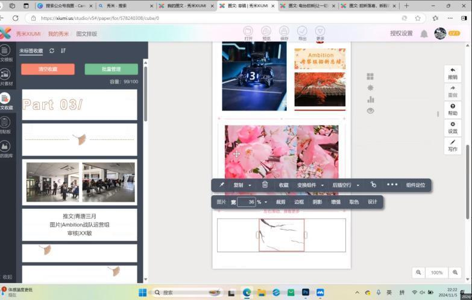
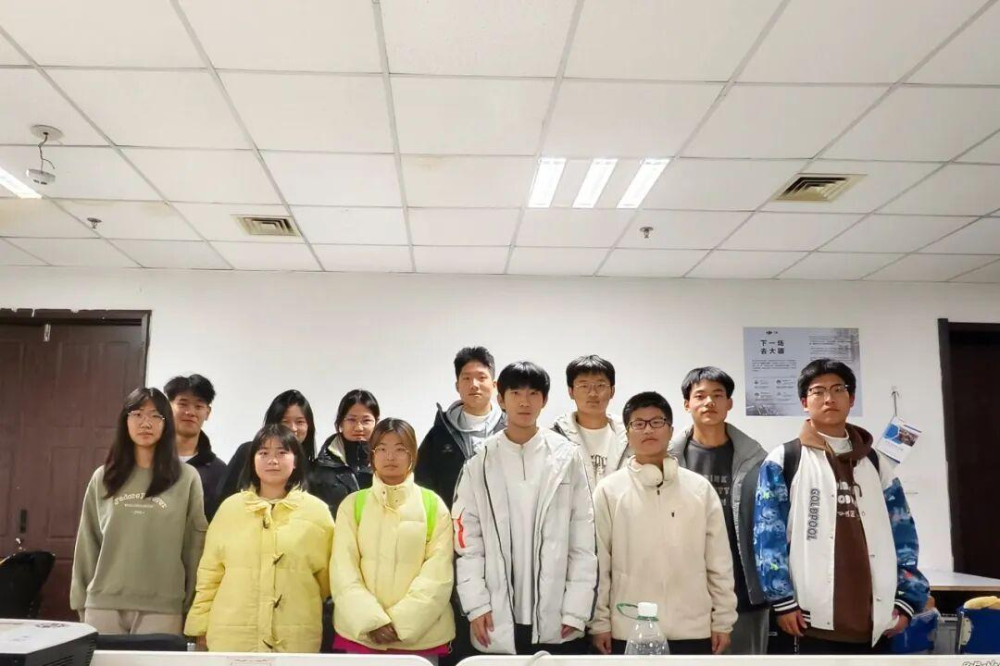

运营组|幕后英雄的采访和培训
运营组
人物采访
在沈阳理工大学的科技创新舞台上，沈理Ambition战队犹如一颗璀璨的明星，不断在各类机器人赛事中斩获佳绩。而在战队光芒的背后,有这样一群默默付出的人———运营组。今天,我们有幸采访到了沈理Ambition战队的运营组成员,一起揭开他们的神秘面纱，探寻战队成功背后的故事。
是什么吸引你们加入沈理Ambition战
队的运营组呢？
运营俞京典：对我来说，与人沟通是我的强项，我希望利用这个优势为战队搭建更多的合作桥梁。看着战队因为我们运营组的努力而获得更多资源和机会，我感到无比自豪。
运营陈家豪：我一直对RoboMaster很感兴趣，而且我发现运营组能让我从一个不同的角度参与到战队中。我希望通过自己的组织能力为战队创造更好的条件，让队员们可以无后顾之忧地发挥他们的实力。
运营组在团队协作方面有哪些独特的经
验和做法？
运营关善启：团队协作是我们成功的关键。我们运营组内部有着明确的分工，每个人都清楚自己的职责和任务。同时，我们也非常注重与技术组等其他部门的沟通和协作，定期召开会议，共同探讨问题和解决方案。在比赛期间，我们更是紧密配合，为队员们提供全方位的支持和保障。
在运营组的工作过程中，你们遇到过哪
些比较大的挑战呢？
运营龚佳利：收集素材的过程是漫长的，制作视频、编辑文案也需要反复修改，这些都不是一蹴而就的，需要耐心。
运营黄于铭：较大的挑战主要是推文模板的排版，文章的编辑、视频的制作等相关内容。但经过自己的努力，克服了它们，因此目前还未遇到过很大的挑战。
对于沈理Ambition战队的未来，你们运
营组有什么期望呢？
运营辛学敏：希望战队一直能朝着进步的方向前进吧，队员们能在打比赛的过程中多多学习，在当下的就业环境中增加自己的筹码。也期待我们运营组能将Ambition战队推向更大的舞台。
运营龚佳利：我希望我们能举办更多高质量的活动，提升战队的影响力。吸引更多有才华的同学加入我们，无论是作为队员还是参与到运营工作中。同时，也希望我们的活动能更加丰富多彩，为队员们提供更多展示自己的平台。
采访ing

通过这次采访，我们看到了运营组的辛勤付出、团队协作和对战队的热爱。他们在幕后默默耕耘，为战队的成功奠定了坚实的基础。让我们一起期待沈理Ambition战队在未来的日子里，在运营组的支持下，能够创造更多的辉煌。

运营组
成员培训

采访当天,学哥学姐们第一次对运营组新成员进行了培训。


学姐对如何使用秀米编辑公众号推文进行了培训。

帅气小哥哥和漂亮小姐姐构成了运营组这个温馨的小团体，这种氛围感觉很不错呢。

本次运营组专访就到这里啦！如果想要了解更多，欢迎来到文体中心询问！
END
推文|关善启
图片|Ambition战队运营组
审核|青唐三月